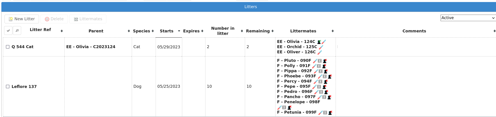

Animals¶
Shelter View¶

The shelter view screen (available from the default quicklinks or under ) gives you an overview of all the animals currently on your shelter, broken down by their internal location.
You can use this screen to jump straight to an animal’s record. You can also drag and drop animals to move them between locations quickly. If you have assigned units to the animal (for cage/pen numbers, etc) they will appear next to their name.
A dropdown in the upper right corner allows one of many different modes to be applied.
There are also special modes to show animals in foster homes, either all available homes with those with space highlighted (identified by the capacity field), or all active foster homes only.
The “Location” modes mostly put animals who are fostered into a special virtual location called “Foster” so that they are separated from your internal locations. There is a mode named “Location (No Virtual)” that does not have this behaviour and shows animals as in the location that they left from if they are on foster, trial adoption or at a retailer.
A special “status” mode separates animals who are adoptable from those who are marked not for adoption, those that are reserved and those that are quarantined, held, cruelty cases or other indicators that they should not leave the shelter.
Location and Unit mode¶
The “Location and Unit” mode will show a box for every unit (units are generally, pens, cages, kennels or runs etc) with the animals occupying them. If a unit is unoccupied, it will be displayed with a green highlight to show it is available. You can drag and drop animals between units in this view to move them around.

An edit icon to the right of the unit’s name allows you to reserve or sponsor a unit. Reserved units appear in red to indicate they are not available. The reserve text entered will be shown.

Units are also shown as reserved when choosing a unit on the animal editing screens.
If an animal is in a sponsored unit, the UNITSPONSOR attribute will be set to the sponsor text in its data when retrieved via the Service API for your website. It will also be available in the $$UNITSPONSOR$$ token for HTML publishing templates. This allows you to show the sponsor of a kennel/pen with the adoptable animal who is in it.
Find Animal¶
ASM has multiple methods of finding animals. The default is the simple screen:

From the single search term, this screen searches all aspects of the animal, including codes, names, breeds, microchip numbers, original owner details, media and movements. Animals are shown irrespective of where they are (the location field displays where the animal is) or whether or not they are dead. When you use the system search box at the top with an a: filter, the simple animal search is what gets performed.
For example, searching for “black” would return animals with black in the name, animals that are black in colour, animals adopted to an owner with the surname black, etc. Results are sorted by relevance, so if the term appears in an animal’s name or code, it will be at the top of the list.
By clicking the Advanced button, you can go to a more sophisticated search screen that allows you to search by animal location and state, age, etc. You can change which find animal screen is shown by default under the menu.

The Advanced screen allows you to enter detailed searches for groups of animals within your database.
If you press the search button without entering any criteria, you will get a list of all animals on the shelter. This is because the location box defaults to “On Shelter” - if you change this to “(all)” you will get all animals wherever they are.
Once you press the search button, ASM will search through your database and check each record against any criteria you have chosen, and return to you a list of all those that matched. For example, you could quite easily search for all animals of species “Dog” who are still on the shelter, located in a particular location and under 6 months old.
The criteria fields follow one of three types:
Drop Down Boxes: You should select something from the list or the “(all)” entry to specify that you do not want to filter by this criteria.
Text Boxes: The system expects you to type part of a word, name or code etc. For example, typing “ben” in the “Name” box on the find animal screen will return all animals who have “ben” somewhere in their name - eg: Ben, Benji, Benson etc. Some boxes require numbers - the “aged between” boxes require an animal age expressed as a year, or fraction of a year. Entering 0 in the “From Age” box and 0.5 in the “To Age” box will return animals who are six months old and younger.
Filter: The filter dropdown allows selection of a number of options at the same time, such as only including animals that were transferred in from another organisation or housetrained.
Edit Animal¶
The animal screen is the one you will certainly use the most often within the system. Across the top, the animal screen has a banner with important information about the animal.
Below the banner, the animal screen is split into a number of different tabbed sections. Clicking these tabs makes that area of the animal active. Because not all of the information is mandatory or applicable to every animal, some of the tabs will show a graphic to highlight that they have information (the graphic varies according to what type of data is available on that particular tab).
Animal Details¶

The animal details tab contains all the basic information about the animal, including it’s breed, species, name, age, location within the shelter, identifying code etc.
A number of flags are available from a dropdown, including “Non-Shelter Animal”. Set this flag if the animal is nothing to do with your shelter, but you want to utilise ASM’s facilities in managing vaccinations, registering microchips, etc. This is very useful for shelters that run their own clinics which are open to members of the public. Non-shelter animals are also useful in combination with the courtesy listing flag, which allows you to manage adoption listings for other shelters or owners without having those animals in your figures.
You can also set a “not for adoption” flag, which enables you to hide this animal from the internet publishers. Using the Hold and Quarantine flags will also hide the animal from publishing and add an emblem (a little icon) when you see the animal.
If the “Use Single Breed Field” option is not enabled in the system options (the default), then ASM will display two breed fields with a “Crossbreed” flag you can set. This allows you to choose two breeds for mixed/crossbreed animals. The details page is subdivided into a number of accordion panels to categorise the details. If you have created additional fields for animals under then the “Additional” panel will appear.
The “Share” button can be used to publish the animal to various social media sites. A link to a publically viewable version of the animal record will be posted. How that viewable page looks can be tailored by editing the “animalview” template under

Details are treated like a document and when viewing, you get a personal copy. Any changes you make aren’t effective until you hit the Save button on the toolbar. If you try to leave the details screen without saving changes, you will be prompted.
Entry¶

The Entry section contains all the information about how the animal originally entered the shelter, including their background history and the names of the original owner and person who brought the animal in.
When adopting animals out, the system uses this information to track owners who have brought animals into the shelter previously and to warn staff before adopting animals to them.
The right hand side of the screen contains the animals original date of entry to the shelter. This date is used when generating animal figures and auditing reports.
If you are using a US locale, you will also see Asilomar categories. These allow ASM to generate Asilomar figures for your shelter. Asilomar statistics are a standardised way of calculating euthanasia figures for animal shelters across the US.
Entry - Bonded Animals¶
The bonded with fields allow you to specify upto two animals that this animal can be bonded to. Bonding an animal to other animals has the following effects:
If the option is on under to merge bonded animals into a single record, then only a single record will be displayed via the website tools or sent to adoptable 3rd party websites. The name shown will be a combination of all the bonded animal names, but the rest of the data including description and photos will be from this first animal.
When the animal is adopted via the screen, a warning will be shown and an adoption movement to the same person will be created on all bonded animals at the same time.
When an online form is received that refers to this animal in a reserveanimalname field and “Create Person” is used, reservations will be created for all bonded animals as well as this one.
When an online form is received that refers to this animal in an animalname or reserveanimalnamefield and “Attach Animal” is used, the form will be attached to this animal and the bonded animals automatically too.
Entry History¶

By default, the Entry section contains the original information of the animal’s first intake to the shelter and movements/returns are used thereafter to track animals returning to the shelter.
For most shelters and rescues, this is fine, but some organisations want to enter that data again for repeat visits and generate a new shelter code for the animal.
If you have the option unticked for then the system will allow you to archive the information on the Entry slider to Entry History so that entry information can be entered each time the animal returns to the shelter.
This can be done with the “New Entry” button on the toolbar.
Clicking the New Entry button does the following:
Takes a copy of all the information on the Entry slider and adds a row to Entry History (making the section appear if it is the first history record).
Generates a new shelter code for the animal.
Copies the returning person, reason and date from the latest returned exit movement on file to the Entry section ready for updates to be made.
The “Date brought in” field will become read only and show the last time the animal returned to the shelter.
Note
The “New Entry” button will only appear on the toolbar if the animal has at least one returned exit movement on file and there are fewer entry history records than returned exit movements.
Health and Identification¶

The health and identification section is used for entering general information about the animal’s health and veterinary care. The special needs box can be used to indicate that the animal has an ongoing or permanent health problem. Ticking this box will flag this when publishing to the internet and to services like PetFinder.
Death¶

The death section is used for capturing information about the animal’s death if it is deceased. The most important field is the deceased date, as a value in this field is used by the system to indicate that the animal is dead.
In addition, an icon will be shown at the side of the death tab if the animal is dead. The animal’s location will also appear as Deceased with the reason. The reason will be shown as “Died off shelter” if the animal was not in the care of the shelter at the time of its death, and the death will not be included in any figures or reports.
Diet¶

The diet tab is used for capturing information about the animal’s diet. You can set up as many different diet types (under ) as you like, and then log them here when the animal’s diet changes.
Costs¶

The costs tab allows you to track costs associated with looking after an animal whilst it is in your care. You can assign a daily boarding cost, and ASM will automatically keep track of how many days the animal has been on your shelter and how much it has cost.
In addition, you can add cost types through the menu and allocate costs for anything else your shelter has spent on the animal (eg: Microchipping). Vaccinations and medical treatments have a cost field that you can set for each treatment and they will be automatically totalled up at the bottom of the costs screen along with a current running cost for all time and a balance, calculated from total costs less any donations allocated to the animal.
By default, when the animal is adopted, ASM will automatically convert the current boarding cost/time into a separate cost record so it can be preserved.
Vaccination¶

The vaccination tab is used to track information about any vaccinations an animal requires. An animal can have an unlimited number of vaccination records. For complicated, multi-diary procedures, see Diary Tasks, covered later on.
Use the toolbar to create and modify items in the list. You will be reminded of outstanding vaccinations via the alerts on the home page, or by viewing them under
Vaccinations can also have a cost attached for use with reporting. The cost is for the individual vaccination.
Vaccinations have three date fields:
Required: This is the date that the vaccine is due to be administered to the animal
Given: This is the date that the vaccine was actually administered to the animal
Expires: This is the date that the vaccine “wears off” and needs to be administered again.
Due vaccinations for the purposes of reporting, alerts and the medical book are those that have a required date, but no given date yet.
Expires is a “belt and braces” reminder. The system expects you to set the expires date when you don’t expect this vaccination to be given again during the animal’s stay with the shelter - eg: a booster vaccination that won’t be given again for a year. It means the system can remind you a new vaccination needs administering in the unlikely the event that the animal is still in the care of the shelter when the date arrives. To get rid of the alert for an expired vaccination, create a new required vaccination for that animal of the same type.
Test¶

The test tab is used to track information about any medical tests an animal requires. An animal can have an unlimited number of test records.
Items in the test list are saved immediately to the database when you hit the Save button in the popup screen. You will be reminded of tests falling due via the Test Diary report, main screen alerts, or by viewing them under
Tests can also have a cost attached for use with reporting.
Medical¶

The medical tab is used to track information about medical treatments an animal is receiving. It is extremely flexible in what it can track and it can handle just about any kind of schedule. You can create medical profiles from and use these as templates for treatment records.
Treatment records are automatically created from regimens. You can edit the regimen by clicking on the treatment name.
As you complete each treatment, ASM will generate the next record in the sequence, until there are none left and the medical record is automatically completed (unless the treatment has an unspecified end, in which case ASM will continue to keep creating treatments until the animal dies).
You can view all outstanding medical treatments at any one time by visiting , you can also print currently outstanding treatments from here.
Medical records can also have a cost associated with them for reporting. The cost is for the whole medical item (ie. If it’s a course of tablets, then the cost should reflect the whole cost of all tablets required for the medical, it is not per individual tablet).
Media¶

The media tab contains documents, images, PDF files and links that have been stored with the animal.
The most common use is for images. Click the attach file button to attach a new file to the animal. When you attach files, they are stored with the animal and you no longer need the original file. Since images are the most common use, the file browser will display previews of images, and if you click an image in the media list, it will be viewed full screen.
The image button menu on the toolbar allows you to transform and manipulate various properties of the image. You can rotate it, convert it to a PDF document (useful for taking photos of paperwork), exclude it from being sent to your website or third party websites and watermark the image.
Watermarking is a process where your logo is copied to the lower right of the image and the animal’s name rendered over the lower left - this requires you to upload your logo named watermark.png to
If the content is a PDF, you can click it to have your browser view it. If the content is an HTML document, then clicking it will open it with ASM’s built in word processor for editing and printing.
One or more media elements can be emailed from here.
HTML documents can be emailed as a PDF and signed. The Sign button menu allows you to sign on screen with a pen/mouse device, send the document to the mobile signing pad or send an email to someone with a request to sign the document.
You can also attach document and video links (for example, to Google Docs or YouTube videos). Video links and images can have a default set for publishing purposes. If you have the “publish all images” turned on in your publishing options and an animal has multiple images, you can individually choose which ones will be published with the tick/cross icon next to the image icon.
Giving an animal the “Not for adoption” or “Not for publishing” flag on the details tab will ensure that the animal is not included in any website publishing.
Notice that when an animal has media, the tab displays a graphic, indicating there is data under this tab.
Diary¶

The diary tab shows a list of all diary notes relating to this particular animal. From here you can create new diary notes, as well as modify existing ones.
Transport¶

The transport tab shows a history of where the current animal has been transported to (particularly useful for rescues who have volunteer drivers taking animals to vets from foster homes). Transport can be scheduled and reports exist to find new transports without a driver, etc.
Movements¶

The movement tab shows a summary of all movements that the animal has undergone. An animal can have an unlimited amount of movements and the movement tab has its own special toolbar. From here, you can create new movements and jump straight to the owner records for existing movements.
Log¶

The log tab is used for logging additional useful information. You can create as many log types as you want under . You can then create a log entry with a given type for a date and with a comment. This is useful for keeping track of animal weights, bite reports, owner emails, complaints and anything else you can think of.
Template Animals¶
It’s quite common for shelters to want to assign certain elements to new animals. Whilst defaults for all the dropdowns can be assigned under , it’s normal to want to be able to assign a set of vaccinations, medical treatments or tests, or a particular diet, or some standard costs to new animals.
To do this, create a new animal record with the vaccination, medical treatments, diets and costs on that you’d like to be assigned to new animals. Make sure that the “Non-shelter” box is ticked so that this template animal is kept away from all reports and figures. Finally, give it the name “TemplateType” or “TemplateSpecies”.
If you name the animal TemplateType, the system will look for your template animal when the type of the new animal matches it. Similarly, the species has to match if the template is called TemplateSpecies. Type is preferred over species so if you have a new animal where the type and species match two different templates, the type will “win” and the new animal will get the records from the matching type template.
Where records require dates (for example, the due date on medical treatments or vaccinations), the system will calculate the new date based on the difference between the date brought in field of the template animal and the due/required date of the cloned records in question.
For example:
Template brought in date: 1st January 2016
Required date of a vaccination on that template: 10th January 2016
Day difference: 10 days
Required date of that vaccination when added to the new animal will be today + 10 days
If the calculated date is in the past, today will be used instead.
When copying from a template animal, ASM will copy the following items to your new animal record:
The animal’s adoption fee amount and description/bio field
The animal’s current vet
The Hold, Is Not Available For Adoption and Do Not Register Microchip flags
Any additional flags the shelter has added to the system
Any additional fields the shelter has added to the system
Vaccinations
Tests
Medical regimens
Diets
Costs
Diary notes
Baby Animals¶
In addition, you can further define a template animal that will only be applied to baby animals. If the animal’s age is under the system default defined “baby split” of 6 months, the system will first look for template animals named TemplateTypeBaby and TemplateSpeciesBaby before falling back to TemplateType and TemplateSpecies if they do not exist.
Precedence¶
If there are TemplateType and TemplateSpecies matches for the new animal, TemplateType will be used. If there are multiple templates of either TemplateType or TemplateSpecies that match (eg: 2 TemplateSpecies animals on file with species=Cat) then the first one to be entered will be used and the later on ignored.
Calculating offsets from Date Of Birth¶
The default behaviour is to have the system calculate the date offset based on the difference between date brought in and the current item, then add it to the date brought in on the new record.
If you would prefer to calculate the offset based on the date of birth and the current item, with it similarly being added to the date of birth on the new record, then you can do this by appending DOB to the template animalname, eg: TemplateSpeciesBabyDOB to calculate on date of birth for a template that applies to baby animals based on species.
This feature is particularly useful for vaccinations and other medical treatments (eg: first worm/flea treatment, spay/neuter etc) that are first given to juvenile animals at a fixed age rather than based on when they entered your care.
Bulk Change Animals¶
The bulk change screen allows you to select one or more shelter animals and set one or more fields to the same value. This is very useful for making a group of animals not for adoption in one go, applying a flag, or moving them all to a different location.
This screen also allows you to create a new log message to be applied to all the selected animals, or to create a new movement for all animals (eg: a fake adoption to get the selected animals off shelter, or if a group are all being transferred to another organisation).
Finally, the delete button on this screen allows you to bulk delete all of the selected animals. Use this option with caution.
Daily Observations¶

The daily observations screen offers a quick way of writing structured log messages to animal records.
Use the dropdown at the top right to filter shelter animals by their current location.
Tick the checkbox against each animal that you wish to write an observation for, then update the text/dropdown fields with your observations. When you are done, the save button on the toolbar will record a log message containing the values for all selected animals.
You can edit the observation values that are requested under

Litters¶
Animal Shelter Manager allows you to track litters as they are born (or come into) the shelter. These facilities are used in particular for generating the monthly animal figures report, where the number of litters on shelter for each day of the month is tracked.
The main screen is accessible from . It shows you a list of all currently active litters on the shelter. A litter is deemed active whilst it has no expiry date, or an expiry date later than today.
If an animal is returned from adoption who was part of an expired litter, the litter will not be resurrected and it will remain expired unless you manually remove the expiry date.
The litter holds information about how many animals collectively made it up, who the mother was (if known), what species of animal the litter is and any comments.

Auto Expiry¶
The system will check all the animals in the litter as part of the overnight batch, and the litter will be automatically given an expiry date in the following scenarios:
There are no animals who make up the litter left in the care of the shelter
The animals in the litter are older than 6 months